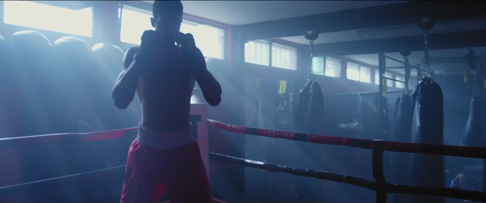
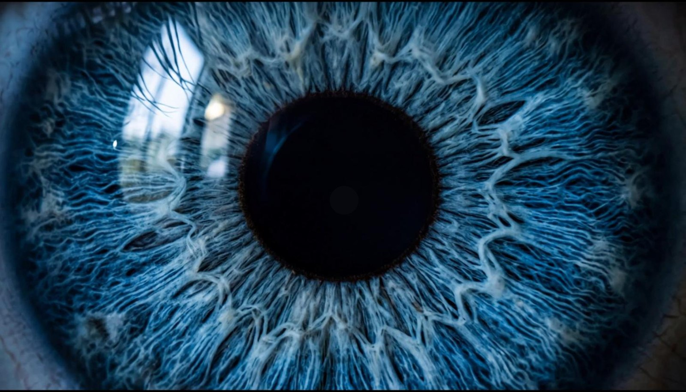

Cualquiera hace un video con un prompt. Que venda y retenga es trabajo de editor. Esa es mi profesión, con la IA en mi flujo para entregarte en tiempo récord.
Documental, anuncio y escena con IA. Dirigidas y editadas por mí.

DEMO REEL · 1:32 · CON SONIDOLe falta lo que la IA no trae: criterio de editor. Estructura, ritmo, continuidad entre tomas, color y mezcla. Edito como siempre lo he hecho y uso la IA como una herramienta más dentro de ese proceso, no al revés.
No tienes que aprender nada. Mi base es la edición de siempre; la IA en mi flujo me deja entregarte cortes con ritmo, color y sonido de cine en una fracción del tiempo de una producción tradicional.
Estudié cómo están construidos los spots de las grandes marcas deportivas: manifiesto, macro de producto y silencio antes del golpe.
Fotogramas del material real como referencia para que los personajes sean los mismos en cada escena.
Instrucciones con lente, velocidad de cámara y física del impacto. Imagen primero, animación después.
Rampa de velocidad, flash en el impacto, drop de la música en el cuadro exacto y grade unificado.
Me cuentas qué quieres que sienta tu audiencia. Yo lo convierto en estructura, guion y referencias.
Ritmo, música y diseño sonoro desde la primera versión, para que veas la historia completa.
Dejas tus notas sobre el cuadro exacto en mi sala de revisión privada. Cero correos eternos.
En el formato y la plataforma que necesites, listo para publicar.
Hooks que detienen el scroll y cortes pensados hasta el último cuadro. Ventas y marca personal.
Testimonios, mini docs y YouTube con estructura, respiración y propósito.
Spots, VFX y escenas que no se pueden grabar, con personajes consistentes e integradas a tu material.
Soy Dan, editor mexicano en Curitiba. Aprendí mi profesión a mano: cada corte, cada mezcla, cada grade. Esa es mi base. Hoy sumo la IA a mi flujo para hacer en horas lo que antes tomaba días, pero las decisiones siguen siendo de editor: qué se cuenta, cómo se siente y cuándo algo está bien.

Respondo en menos de 24 horas.